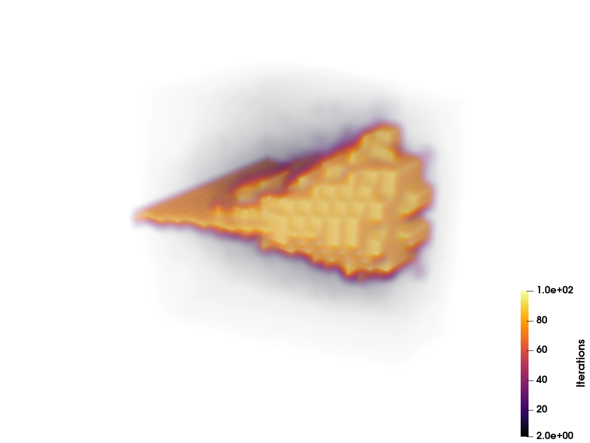
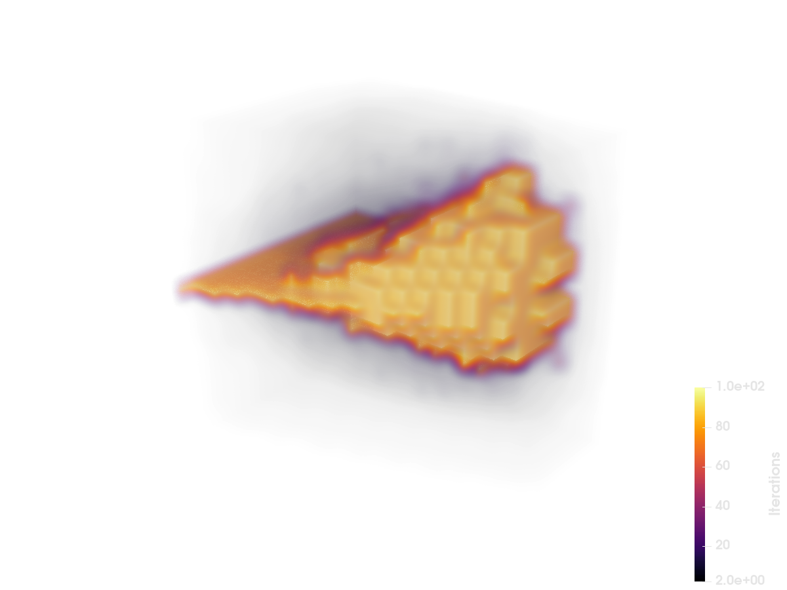
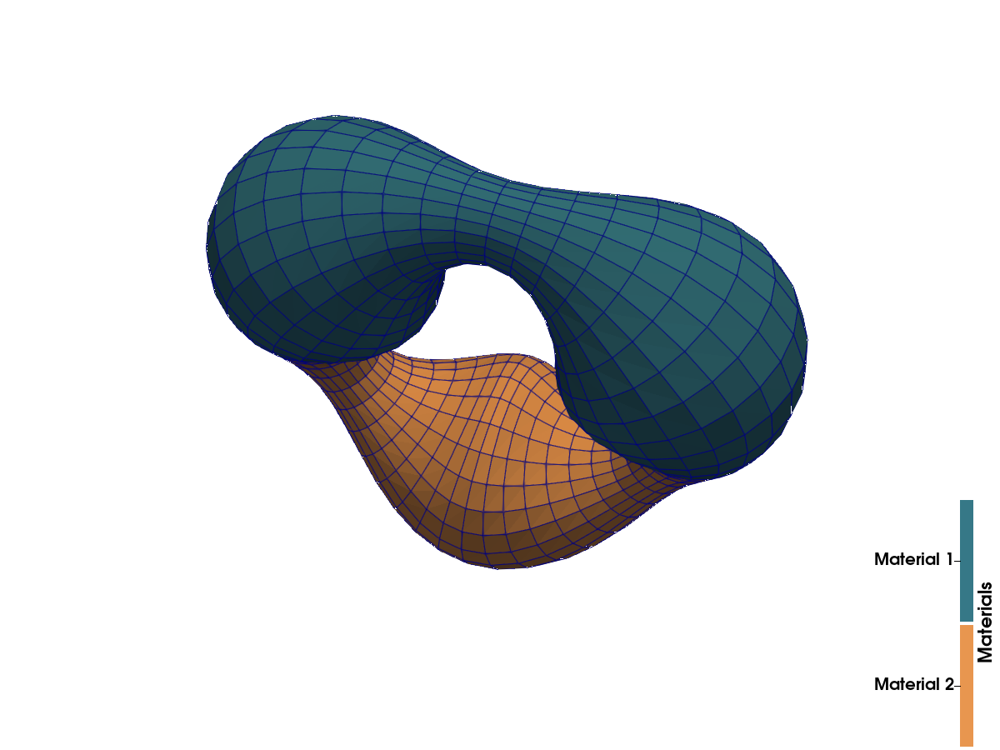
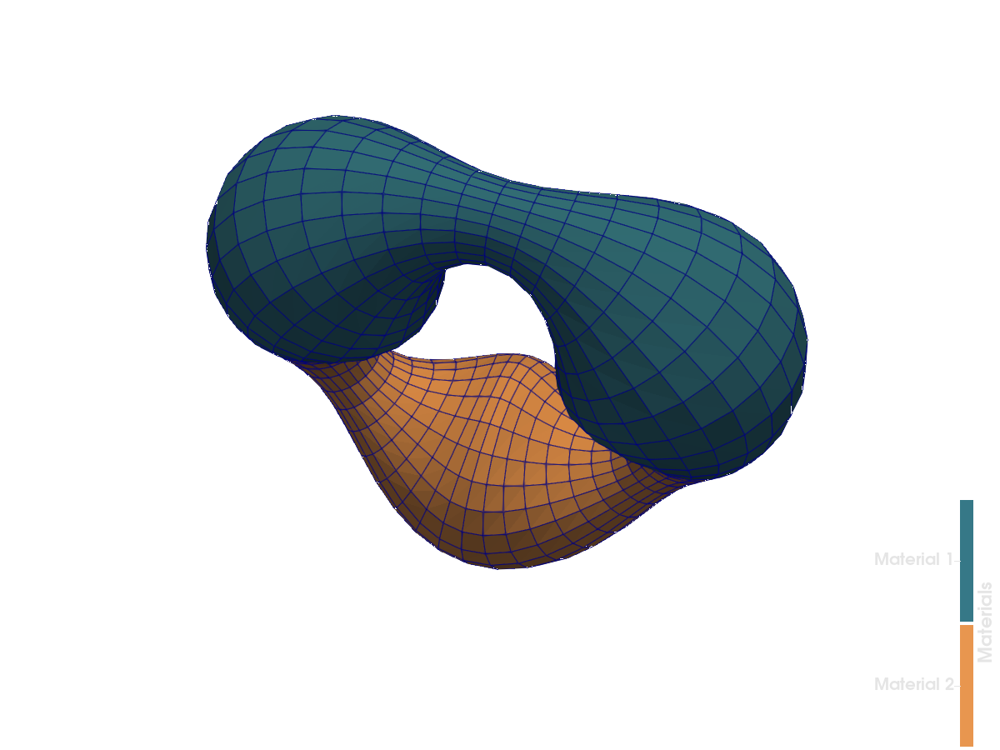
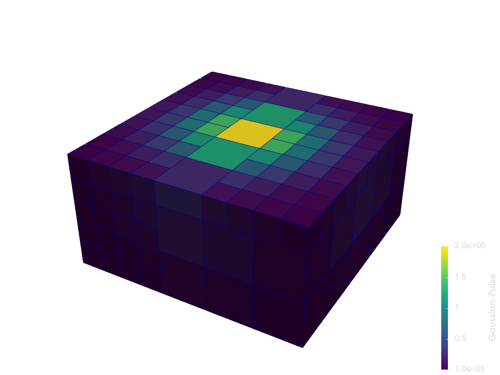
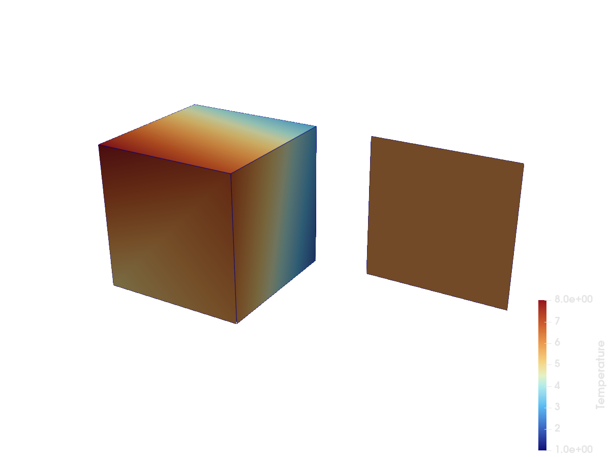
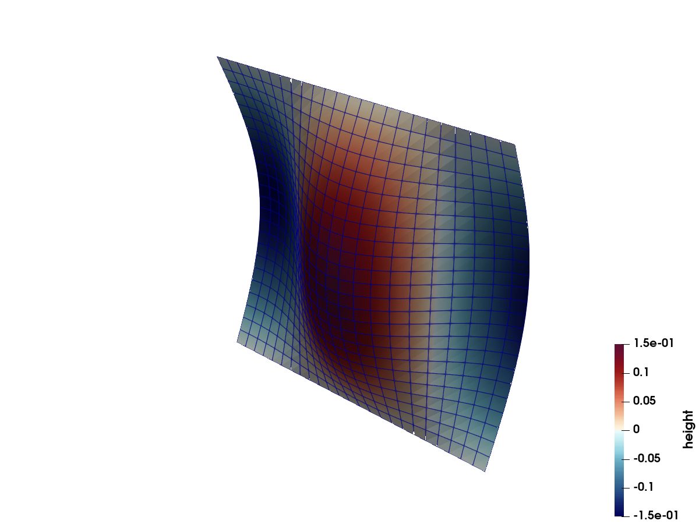

Examples
One example per reference file shown in the VTKHDF specification, ported to this package. Click an example to see the code that writes (and reads back) the file.


ImageData: Mandelbrot volume


UnstructuredGrid: partitioned mesh


PolyData: warped torus surface


OverlappingAMR: Gaussian pulse


PartitionedDataSetCollection: blocks and assembly


Temporal PolyData: a travelling wave